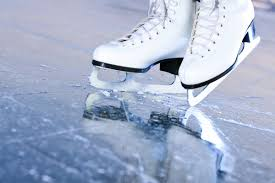
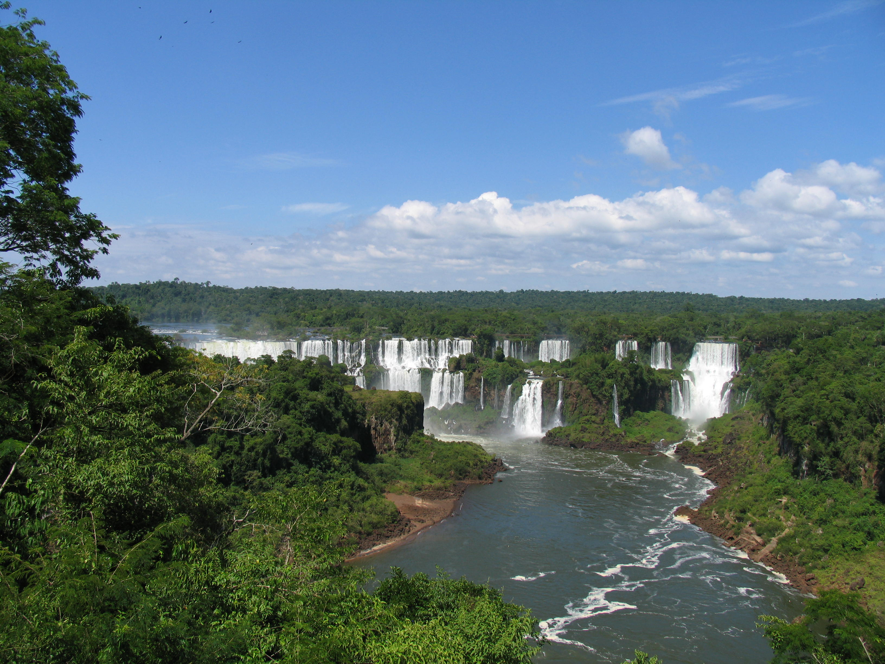

Retour à la présentation
Le travail et les études

Mon travail consiste à coordonner une revue scientifique destinée aux médecins omnipraticiens du Québec
Le Médecin du Québec, de collaborer
avec les auteurs qui ont acceptés d'écrire dans le cahier de formation. Je fais d'ailleurs la mise en ligne de congrès
médicaux sur différente thématique, c'est, entre autres, pour cela que je me suis inscrite au cours d'Intégration
& Design Web afin d'acquérir des compétences supplémentaires.
Liste des écoles fréquentées
- École primaire Bernard Corbin
- École secondaire Des Rives
- École de formation professionnelle l'Émergence
- Cégep de Maisonneuve (Sciences humaines, profil psychologie)
- Cégep de Trois-Rivières (AEC Intégration & Design Web)
Haut de la page
Le sport

J'ai pratiqué longtemps le patinage artistique et le flag football au secondaire. À ces jours je me concentre à un entraînement diversifié, soit la course
à pied, le ski, le vélo, etc.
| Sports |
Position |
Expérience |
| Patinage artistique |
Solo |
14 ans |
| Flag football |
"Snapper" |
3 ans |
Haut de la page
Les loisirs
Mes loisirs se confondent avec les sports, mais j'aime d'ailleurs pratiquer la photographie, j'adore voyager, lire
et apprendre de nouvelles choses, comme les cultures, de nouvelles recettes, etc.
| Loisirs |
Expériences |
| Photographie |
 |
| Voyage |
 |
- Photographie
- Voyages
- Lecture
- Cuisiner
- etc.
Haut de la page
Les rêves

Faire le tour de cette merveilleuse planète, avoir une terre de vignoble sont des rêves, qui sait, peut-être un jour ils
se réaliseront.
Haut de la page